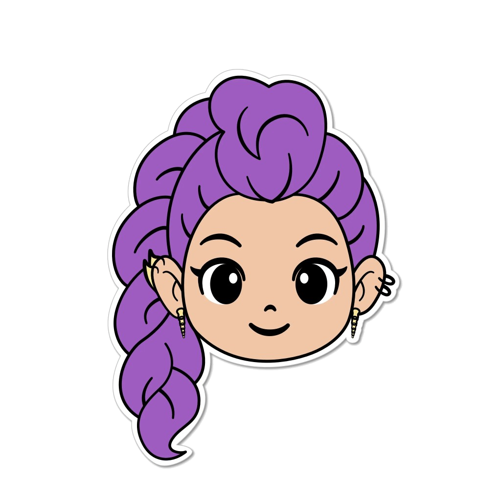

Contar con Rumi
⭐ 8
Luces
Falta
2→12
4 + +2 = ¿?
10
2
8
12
4
6
🔊 cuatro … ¿y dos más?
Easiest · recommended
1. Canto + salto
Only 2–12 (de 3: only 3–18). Board shuffled. After each hit, a fat +2 / +3 so she knows the jump, not just “next even.” Speak the chant.